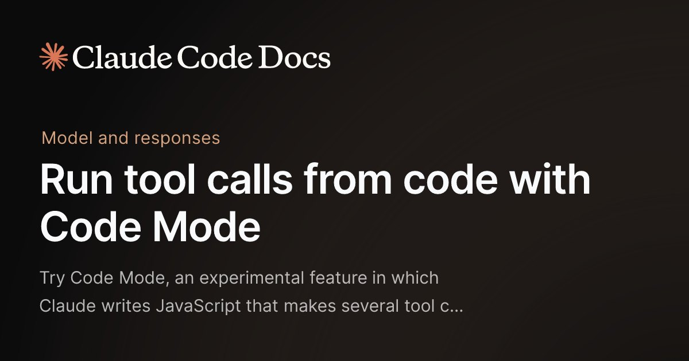
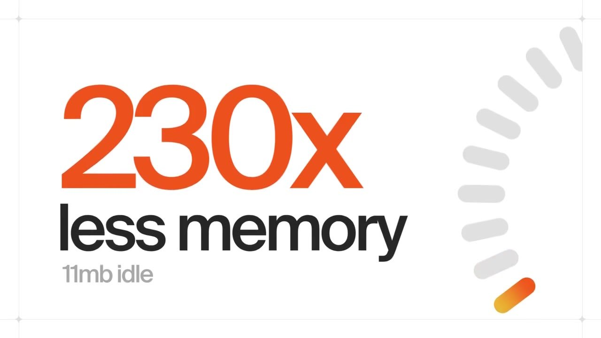

Ouça a edição · 1:40Um papo rápido sobre as notícias de hoje
0:00/1:40
Claude Code · experimental · @ClaudeDevs
Code Mode deixa o Claude Code escrever um script que encadeia as ferramentas, em vez de chamar uma de cada vez
O Claude Code ganhou o Code Mode, um jeito experimental de trabalhar com tools em que o Claude escreve um trecho de JavaScript que faz várias chamadas num passo só. O script pode rodar comandos em paralelo, passar o resultado de um para o próximo e devolver só a parte da saída que interessa, e o Claude ainda consegue responder enquanto um comando longo continua rodando.
Post de 17 de novembro · @ClaudeDevs · 2,2 milhões de impressões e mais de 14 mil bookmarks
Sem o Code Mode, o Claude pede um Bash, um Read ou um Edit, lê o resultado e só então decide o passo seguinte. Com ele, a lógica vira código: no exemplo da documentação, um pedido para aumentar um limite de retry vira quatro linhas que acham o arquivo com rg, trocam o valor, rodam os testes e devolvem o caminho e a saída. Na conversa você continua vendo as chamadas, como o diff da edição, e o código em si aparece no transcript viewer, aberto com Ctrl+O.
A Anthropic recomenda o modo para tarefas com muitas chamadas relacionadas, como uma mudança que se repete em vários arquivos, uma busca cujo resultado precisa de filtro antes de o Claude ler, ou comandos independentes que podem rodar ao mesmo tempo. Há limites claros: o código para depois de dez minutos se não puder ir para background, o classifier do auto mode revisa o script inteiro e não cada chamada, e o recurso só funciona numa sessão interativa no terminal, com o build nativo a partir da v2.1.323.
Para ligar, basta subir o claude com CLAUDE_CODE_EXPERIMENTAL_CODE_MODE=1. Ficam de fora, por enquanto, o modo -p, o Agent SDK, o painel do VS Code, o app Desktop e as sessões na nuvem, além de contas via Bedrock e outros gateways. Se você tem um refactor repetitivo parado na fila, é o caso de teste ideal.
O exemplo da documentação: achar o arquivo, editar e rodar os testes num passo só.

O recurso é experimental, vem desligado e pode mudar ou sumir em qualquer release.
02
Radar
scraping local em Rust, um desktop no navegador, disco em S3 para agentes, um benchmark de ataques e vídeos recriados
open source · Rust · scraping · @firecrawl

Firecrawl Local reescreve o scraper em Rust para o agente raspar a web na sua máquina, com 11 MB de memória parado
A Firecrawl reconstruiu o repositório para que os agentes façam scraping localmente. O Firecrawl Local é um binário único em Rust que faz scrape, crawl e map sem banco, fila ou container, e a empresa diz que ele é 37 vezes mais rápido que a versão self-hosted e usa 230 vezes menos memória, com 11 MB em idle. Tudo é open source e compatível de saída com o MCP e os SDKs da Firecrawl.
O comando serve sobe a API v2 da Firecrawl em localhost, na porta 3002, então código que já fala com a Firecrawl roda sem mudança. Páginas que dependem de JavaScript são renderizadas no Chrome que você já tem instalado, enquanto busca e páginas que recusam a sua máquina vão para a Firecrawl Cloud, comportamento que dá para desligar com FIRECRAWL_CLOUD=off.
screen-relay transmite um desktop para o navegador a até 120 fps e deixa o agente usar a mesma tela
O screen-relay é um projeto experimental da Vercel Labs que captura a tela de um Linux, macOS ou Windows, codifica em H.264 e entrega no navegador, onde você usa mouse e teclado normalmente. Um agente controla o mesmo desktop pelo CLI, por um SDK em Node ou pela API HTTP e WebSocket, tirando screenshots e mandando cliques, teclas e texto.
Num Vercel Sandbox de 8 vCPUs, o projeto chega a 120 fps. Áudio, clipboard e encoding por hardware ainda não são suportados, e a instalação é um npm i -g screen-relay seguido de screen-relay up.
Skywake transforma um bucket S3 num disco local e dá a cada agente a própria cópia do workspace em 10 ms
O Skywake é um filesystem e um search engine open source para agentes, lançado sob Apache 2.0. Ele monta o seu bucket S3 como um disco rápido e cria cópias do workspace em 10 ms, de modo que cem agentes trabalhando num repositório de 10 GB ocupam 30 GB, e não 1 TB, o que o projeto calcula como um custo 33 vezes menor.
A busca funciona por significado, por palavras exatas ou pelos dois, com um índice que também é copiado para cada agente. O Git continua rodando normalmente dentro de cada cópia, e dá para fazer self-host com Docker ou Kubernetes.
FrontierBreach mede quantas vezes um ataque consegue desviar um agente numa tarefa corporativa, e a distância entre os modelos é enorme
A PromptArmor lançou o FrontierBreach, um benchmark de attack success rate em workflows agênticos de empresa. A tese é que os benchmarks atuais subestimam o risco, e por isso os cenários usam tarefas corporativas realistas e cadeias de ataque que terminam em consequências concretas, como ransomware, exfiltração de dados e phishing.
No primeiro ranking, com k=5 e intervalo de confiança de 95%, o Gemini 4 Carbon foi enganado em 2,4% das tentativas, o GPT-6 Astra em 7,6% e o Claude Fable 5.2 em 10%, enquanto o Grok 4.5 chegou a 91,4%. O post passou de 1,1 milhão de impressões.
A skill reverse-any-video do HyperFrames recria um vídeo como projeto editável em 81 segundos
James Russo apresentou a reverse-any-video, a skill que o time dele construiu para o HyperFrames, o framework da HeyGen que renderiza HTML como vídeo, e a colocou lado a lado com a REA-Video, outra skill que circula para o mesmo fim. Na comparação dele, a reconstrução levou 81 segundos contra 1.595, cerca de 20 vezes mais rápido, com SSIM de 0,96 contra 0,78 em relação ao original.
A skill refaz o vídeo como um projeto HyperFrames que continua editável, com cortes, tempos, textos e áudio conferidos quadro a quadro, e faz parte do plano Pro. A documentação pede que você só recrie vídeos que tem direito de usar.
Ligue o Code Mode e entregue a ele um refactor repetitivo
Atualize o Claude Code para a v2.1.323 ou mais nova, abra o terminal com CLAUDE_CODE_EXPERIMENTAL_CODE_MODE=1 claude e peça uma mudança que se repete em vários arquivos, como renomear uma opção ou trocar um import. Depois abra o transcript com Ctrl+O, leia o script que ele escreveu e compare o tempo com o da mesma tarefa no modo normal.
teste 2 · Firecrawl Local
Raspe uma documentação inteira para markdown sem sair da máquina
Instale com cargo install firecrawl-local e rode um crawl com --limit 50 e --out ./pages numa documentação que você consulta sempre. Em seguida suba o firecrawl-local serve com FIRECRAWL_CLOUD=off, aponte um SDK da Firecrawl para localhost:3002 e veja se o seu código atual funciona sem nenhuma mudança.
teste 3 · screen-relay
Abra o seu desktop no navegador e deixe um agente tirar o screenshot
Rode npm i -g screen-relay e screen-relay up, abra o link do viewer e use a máquina pelo navegador por alguns minutos. Depois peça ao seu agente para tirar um screenshot e clicar em algo pelo CLI, e repare na latência entre o comando e o que aparece na tela.